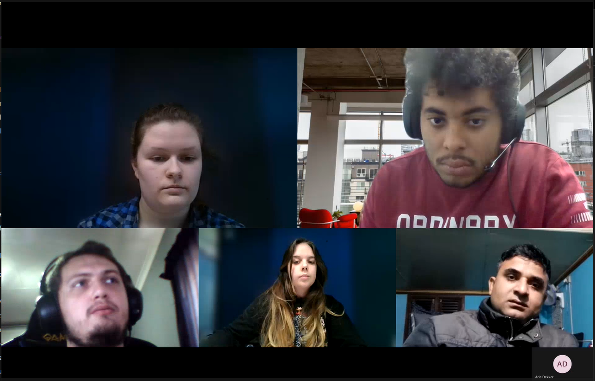

Het Research Project bestond uit verschillende workshops om ook de de cultuur en de projectowner te leren kennen. We besproken technische zaken en werden in groepjes opgedeeld.

Ons groepje bestond uit leerlingen uit PXL (ik), studenten uit Fontys Hier spreken we met de projectowner over de het project en de vooruitgang van de ontwikkelingen. Na de eerste fase vol met planning, zijn we overgegaan naar het uitwerken van een applicatie.
Dit was de eerste iteratie van de applicatie. Hier is een voorbeeld van hoe dat de app eruit zou zien. De namen van de stations worden getoond en erop klikken geeft meer informatie weer.